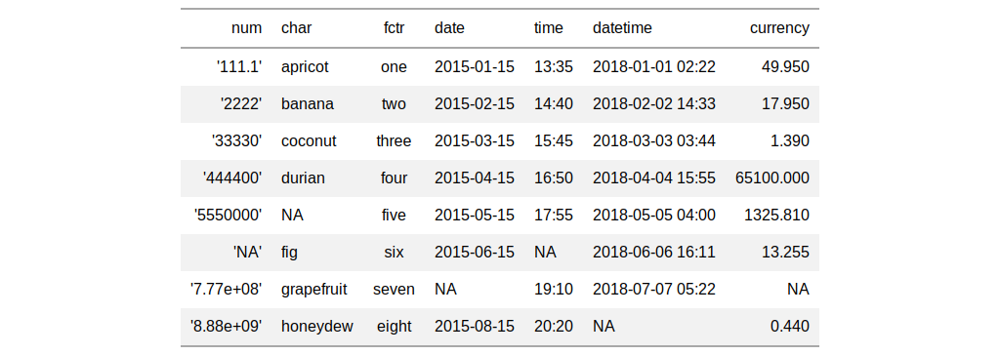

| fmt {gt} | R Documentation |
The fmt() function provides greater control in formatting raw data
values than any of the specialized fmt_*() functions that are
available in gt. Along with the columns and rows
arguments that provide some precision in targeting data cells, the fns
argument allows you to define one or more functions for manipulating the raw
data.
fmt(data, columns = NULL, rows = NULL, fns)
data |
a table object that is created using the |
columns |
the columns to format. Can either be a series of column names
provided in |
rows |
optional rows to format. Not providing any value results in all
rows in |
fns |
a single formatting function or a named list of functions. |
If providing a single function to fns, the recommended format is in
the form: fns = function(x) .... This single function will format the
targeted data cells the same way regardless of the output format (e.g., HTML,
LaTeX, RTF).
If you require formatting of x that depends on the output format, a
list of functions can be provided for the html, latex, and
default contexts. This can be in the form of fns = list(html =
function(x) ..., latex = function(x) ..., default = function(x) ...). In
this multiple-function case, we recommended including the default
function as a fallback if all contexts aren't provided.
As with all of the fmt_*() functions, targeting of values is done
through columns and additionally by rows (if nothing is
provided for rows then entire columns are selected). A number of
helper functions exist to make targeting more effective. Conditional
formatting is possible by providing a conditional expression to the
rows argument. See the Arguments section for more information on this.
an object of class gt_tbl.

Other data formatting functions: data_color,
fmt_currency, fmt_datetime,
fmt_date, fmt_missing,
fmt_number, fmt_passthrough,
fmt_percent, fmt_scientific,
fmt_time, text_transform
# Use `exibble` to create a gt table;
# format the numeric values in the `num`
# column with a function supplied to
# the `fns` argument
tab_1 <-
exibble %>%
dplyr::select(-row, -group) %>%
gt() %>%
fmt(
columns = vars(num),
fns = function(x) {
paste0("'", x * 1000, "'")
}
)